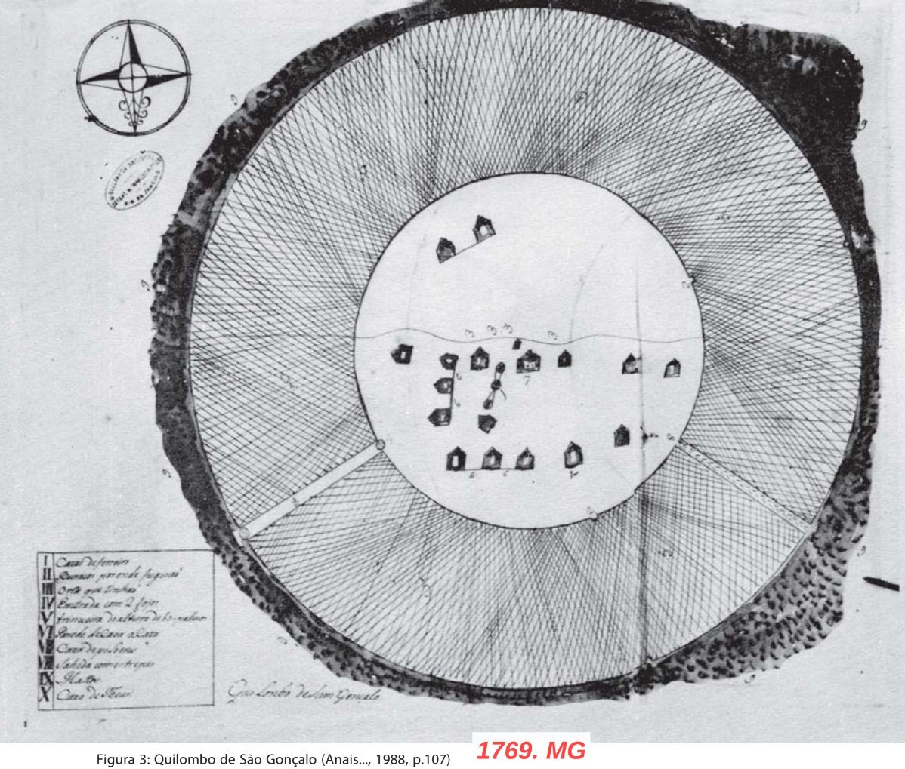
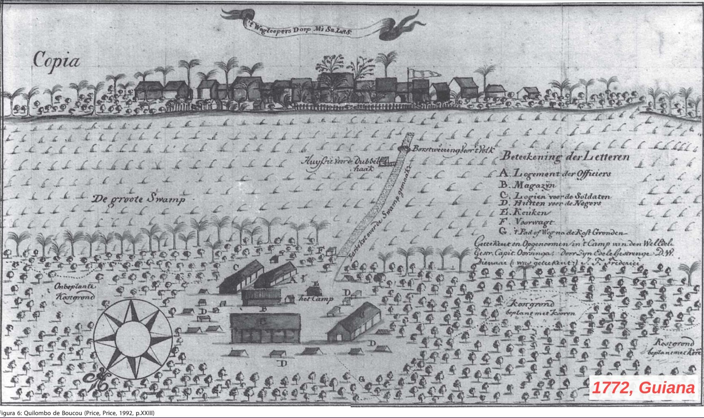
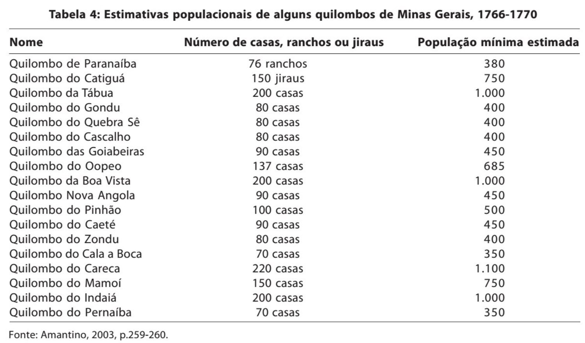
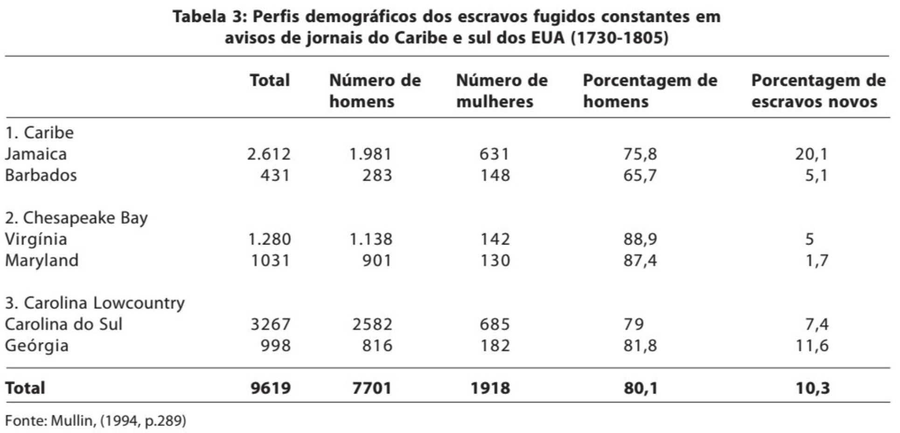

Aula 13: Lutas contra o cativeiro, lutas pela liberdade — parte 1
![]()
quinta-feira, 11 de junho de 2026
Acesse a apresentação
Lutas contra o cativeiro, lutas pela liberdade — parte 1
- Como um escravizado resiste?
- Quais as variações no tempo e no espaço?
- Como estudar e pesquisar? Que fontes?
Historiografia
Visão tradicional
- Negros dóceis, ignorantes, coisas, objetos
- Violência como única reação possível
História Social da Escravidão (1960)
- Escravizados como agentes históricos
- Superar a análise macro-econômica
- Teoria e metodologia interdisciplinar
- Fontes variadas
Autores fundamentais
- Eugene Genovese (1930–2012): paternalismo e autonomia
- Herbert Gutman (1928–1985): família escrava
- Sidney Mintz (1922–2015): campesinato negro
- Ciro F. Cardoso (1942–2013): brecha camponesa
- S. Chalhoub e Eduardo Silva: entre Zumbi e Pai João
Como um escravizado resiste?
- Variações no tempo?
- Variações no espaço?
- Como estudar e pesquisar? Que fontes?
Quilombos, Palenques, Cimarrones, Maroons
Quilombos, Palenques, Cimarrones, Maroons
- Variedade e diversidade
- Redes de sociabilidade
- Economia, proto-campesinato
- Ação política?
Características das comunidades cimarronas
- Regiões inacessíveis
- Defesa: caminhos, estacas, armadilhas
- Guerra de guerrilha
- Práticas religiosas
- Adaptação econômica e tendências inovadoras
- Contato e aprendizado com as sociedades nativas
Características das comunidades cimarronas
- Dependência da sociedade de plantation: limite das sociedades cimarronas
- Contato e relações com a sociedade de plantation: comércio, trocas, contrabando — mas também relações políticas
- Organização interna + estado de guerra: lealdade; período de prova para novos membros, autoridade interna forte, questão de gênero

Quilombo de São Gonçalo, 1769, MG. Fonte: Amantino, 2003, p. 107

Figura 6: Quilombo de Boucou (Price, 1992, p. XXIII)
Redes de interação e sociabilidade
- Herança africana: destreza militar, estratégias de ataque e defesa, emergência de lideranças fortes, hierarquia rígida e em alguns casos de escravidão (p. 285)
Redes de interação: alianças
“Os palenques mantinham graus razoáveis de interação com escravos, indígenas, forros e homens livres que viviam em seu entorno, e senhores e autoridades coloniais sabiam que as redes que os uniam eram fundamentais para a reprodução e o crescimento dos grupos de fugitivos.” (p. 273)
Redes de interação: alianças
- Pena de morte para fugitivos de mais de 6 meses com contato com quilombolas
- “Redes estáveis de sociabilidade e auxílio permitiam a obtenção de alimentos, armas, munição, dinheiro e informações que garantiam a sobrevivência presente e futura” (p. 273)
- Relação de aliança com muitas comunidades indígenas, especialmente em regiões de fronteira
Organização interna
“Além dos variados tipos de relações com o entorno, a reiteração temporal das grandes comunidades palenqueras repousava na possibilidade de combinar eficientemente uma população em crescimento, mantida por sistemas agrários razoavelmente produtivos, um panorama de significativo incremento de relações de parentesco a unir seus membros, hierarquias internas bem estruturadas.” (p. 279)

Tabela 4: Estimativas populacionais de alguns quilombos de Minas Gerais, 1766-1770. Fonte: Amantino, 2003, p. 259-260

Tabela 3: Perfis demográficos dos escravos fugidos constantes em avisos de jornais do Caribe e sul dos EUA (1730-1805). Fonte: Mullin, 1994, p. 289
Formas de resistência
A fuga como resistência
Ataque direto à propriedade privada
“A fuga, como a insurgência, não pode ser banalizada: é um ato extremo e sua simples possibilidade marca os limites da dominação, mesmo para o mais acomodado dos escravos e o mais terrível dos senhores, garantindo-lhes espaço para negociação no conflito” (p. 63)
Fugas-reivindicatórias
Fugas-rompimento
Luta por liberdade específica
- Campesinato, independência, autonomia
- Maior número de fugas em regiões com maior dependência do tráfico transatlântico
- Quanto maiores as taxas de alforria, menor o número de fugas
- Adultos de sexo masculino fugiam mais
Fugas para fora e fugas para dentro
Fugas para fora (do século XVI até 1870, no Brasil): paradigma colonial — buscam se isolar da sociedade
Fugas para dentro (a partir de 1870): quebra do paradigma ideológico — “para o interior da própria sociedade escravista, onde encontram, finalmente, a dimensão política de luta pela transformação do sistema” (p. 72)
Bibliografia da aula
- ARANA, Paola Vargas. Balanço historiográfico sobre as insurgências de africanos(as) e afrodescendentes contra a escravidão em América. Anais eletrônicos da XII Jornada de Estudos Históricos Professor Manoel Salgado, PPGHIS-UFRJ, v. 3, p. 657-678, 2017.
- FLORENTINO, Manolo; AMANTINO, Márcia. Uma morfologia dos quilombos nas Américas, séculos XVI-XIX. História, Ciências, Saúde — Manguinhos, Rio de Janeiro, v. 19, supl., p. 259-297, dez. 2012.
- MULLIN, Michael. Africa in America: Slave Acculturation and Resistance in the American South and the British Caribbean, 1736-1831. Urbana: University of Illinois Press, 1994.

Eric Brasil | Entre em contato | CCLHM0076 — História da América: colonização e resistência